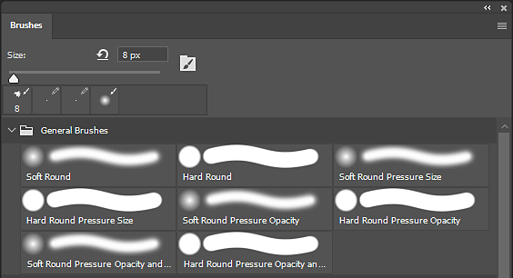
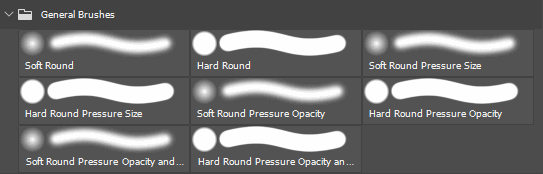
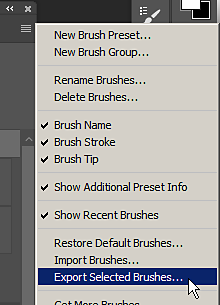

Open Adobe Photoshop.
ABR files (Photoshop Brush presets) can be created from Adobe Photoshop only. To create an ABR containing presets, simply follow the steps below:
Open Adobe Photoshop.
ABR files can only be created from within Photoshop.
Open the Brushes panel.
Open the Brushes panel from Window > Brushes.

Select the Brush presets (or groups) to export.
Press and hold CTRL to select multiple brushes or presets.

Export to an ABR file.
Open the settings menu of the Brush Window and select Export Selected Brushes.
A file dialog will appear asking for a filename and location to save the exported ABR file.
